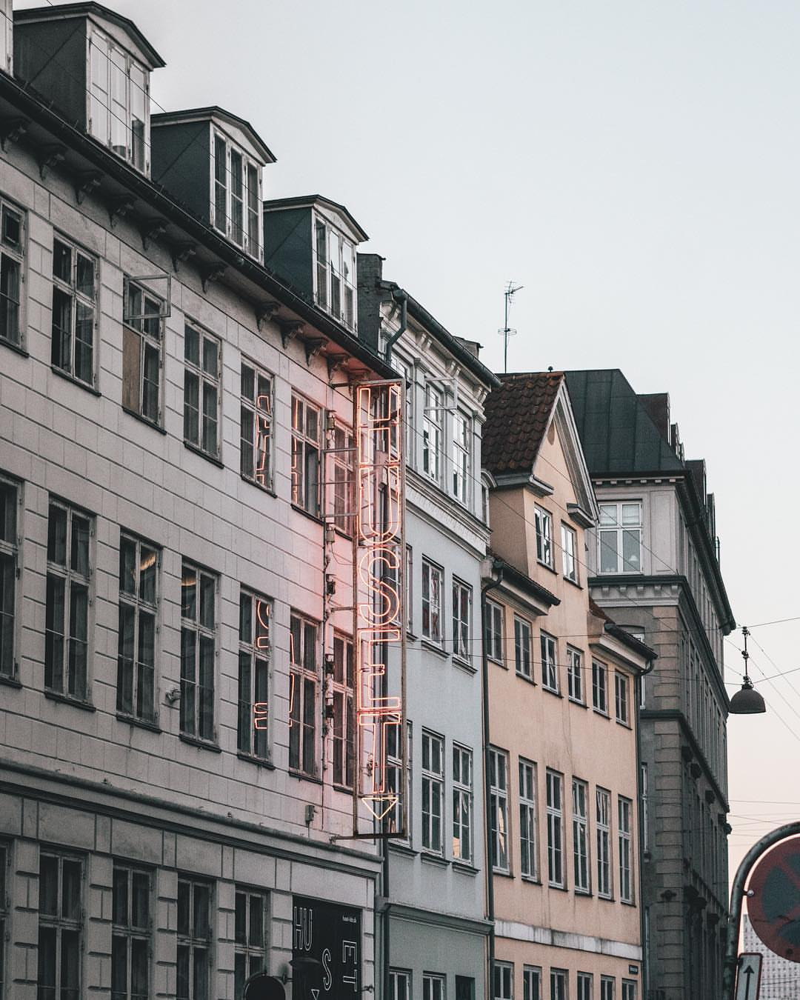

Unique and original experiences since 1970
Huset-KBH (or simply ‘Huset’) is Denmark’s first and largest culture house founded in 1970! Today Huset hosts approximately 1,500 annual events, distributed across 5 diverse stages, a cinema, and a board game café. Everything from live music, theatre performances, alternative cinematic films, to spoken word and stand-up comedy can be experienced here, at Huset. Inside Huset, you can find a board game cafe, a small ‘kitsch’ event cinema, as well as an interesting concert venue for both upcoming and established artists. This venue contains unique experiences for everyone regardless if you speak Danish or English! Huset offers financially friendly prices, even for tightest wallets, and often holds many free events. This unique culture house has a remarkable legacy spanning over four decades and is very important to many Copenhageners. Residents know it for its colorful history, cultural diversity and musical programs. The experiences shared at Huset continue to invite guests to come back for more! Huset-KBH is a great place to volunteer! At Huset, you can meet Danish and other international volunteers while gaining professional experiences within various fields. Moreover, Huset is part of the City of Copenhagen but its activity is based on volunteers and co-creation with the surround cultural and underground environment.